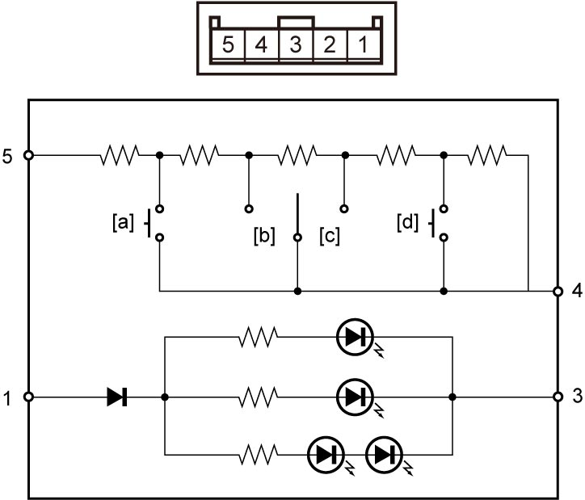

3B
| Driving Mode Switch Inspection |
1)Remove driving mode switch. 
2)Measure resistance between terminals “4” and “5” under each condition in the table.
3)Check for continuity between terminals “1” and “3” under each condition in the table.

NOTE:
Set tester at diode range when measuring between terminals “1” and “3”.

 "Expand image")
Driving mode switch resistance
| Terminal position | Resistance | Measurement condition |
| 4 – 5 | 55.6 – 58.5 Ω | [a]: AUTO switch pushed |
| 208.1 – 214.3 Ω | [b]: Mode dial turned to SPORT | |
| 514.0 – 526.4 Ω | [c]: Mode dial turned to SNOW | |
| 1127.8 – 1152.6 Ω | [d]: LOCK switch is pushed | |
| 3503.8 – 3574.6 Ω | Except above | |
| 1 –3 | Continuity | — |
4)If check result is not as specified, replace driving mode switch.